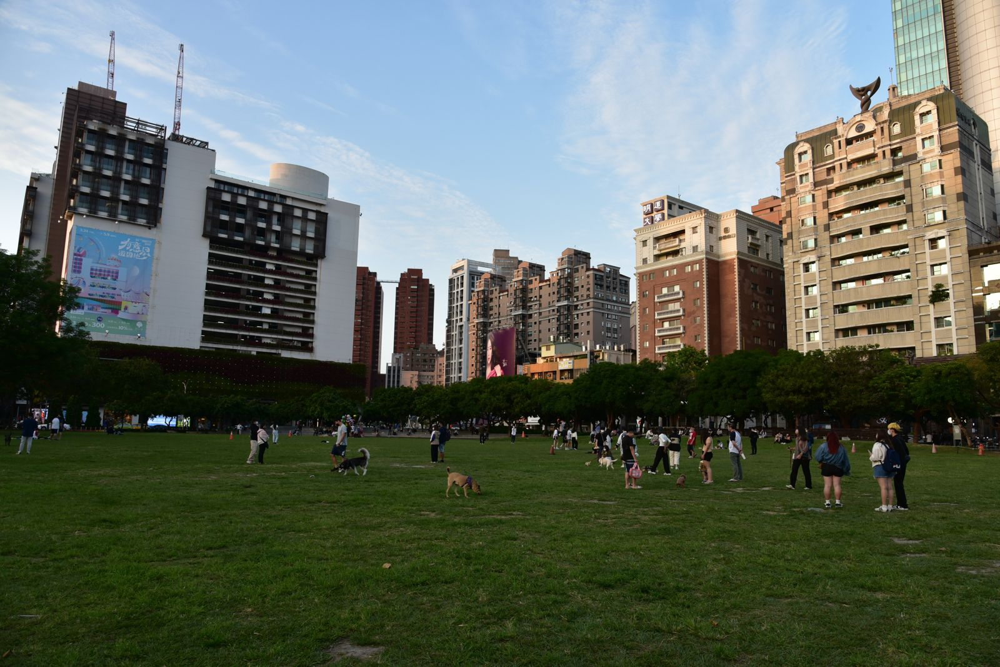
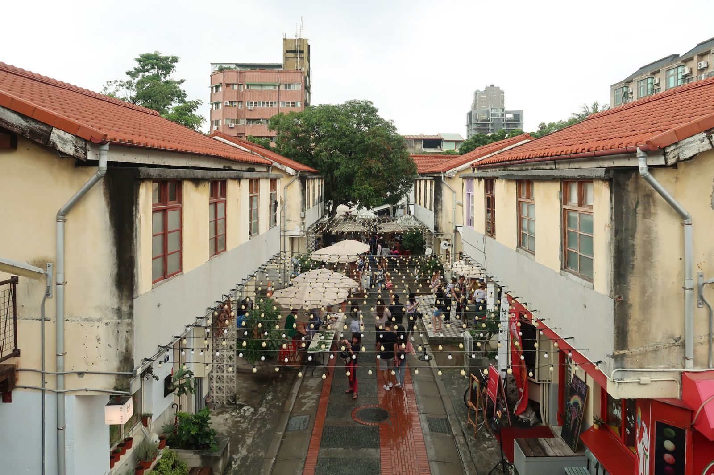

타이중 도심 걷기 코스, 과학박물관에서 심계신촌까지 될까?
버스 한 번이면 출발점에 닿고, 나머지는 공원길과 골목을 이어 걸으면 되는 반나절 코스입니다.
게시
타이중 도심 걷기 코스를 찾는다면 가장 많이 나오는 답이 차오우다오(草悟道)예요. 국립자연과학박물관에서 국립대만미술관까지 이어지는 도심 녹지 길이라, 시민광장과 녹광계획(綠光計畫), 심계신촌(審計新村)을 한 줄로 묶어 걸을 수 있습니다. 타이중 MRT는 이 일대를 지나지 않아서 "어떻게 가서 어디까지 걸어야 하나"가 첫 고민이 되는데, 타이중시 관광 안내와 각 관 공식 정보를 기준으로 순서와 거리, 쉬는 날을 정리해봤어요.
01 · 타이중 도심 걷기 코스, 한눈에 보기 (2026년 10월 기준)
| 구간·장소 | 알아둘 점 | |
|---|---|---|
| 국립자연과학박물관 | 코스 북쪽 출발점 | 화~일 09:00~17:00(매표 16:30까지), 월요일 휴관 |
| 차오우다오 → 시민광장 | 박물관~미술관 전체 약 3.6km 녹지 길 | 시민광장 주변에 버스 정류장·유바이크 대여소 |
| 녹광계획 | 차오우다오에서 약 200m | 작은 창작 상점이 모인 골목, 가게마다 영업시간 다름 |
| 심계신촌 | 녹광계획에서 약 300m | 옛 관사 골목, 주말에 비정기 장터 |
| 국립대만미술관 | 심계신촌에서 약 400m | 화~금 09:00~17:00, 토·일 09:00~18:00, 월요일 휴관 |
거리는 타이중시 관광여행국 사이트의 주변 명소 안내(직선거리)를 옮긴 거예요. 전체를 박물관에서 미술관까지 다 걸으면 3.6km 남짓이라, 박물관이나 미술관 관람 시간을 넣으면 반나절 코스로 잡는 편이 무난합니다. 두 박물관 모두 월요일 휴관(월요일이 공휴일이면 개관)이라 월요일에는 실내 관람 없이 공원길과 골목만 걷게 돼요.

02 · 출발점까지 가는 법: 버스가 편해요
타이중역에서 300·305·307번 草悟道 상권 교통 안내에 따르면 타이중역에서 300·305·307번 버스를 타고 科博館(과학박물관) 정류장에서 내리면 돼요. 타이완대로(台灣大道)를 지나는 300번대 버스가 이 정류장에 섭니다.
시민광장 바로 앞 정류장 교통부 관광서 안내에는 시민광장 옆에 '草悟道(市民廣場)' 버스 정류장이 있어요. 중간부터 걷고 싶다면 여기서 시작해도 됩니다.
MRT는 멀어요 가장 가까운 MRT역(水安宮)도 차오우다오에서 직선으로 약 1.7km 떨어져 있어요. 버스 노선과 도착 시간은 구글 지도나 버스 앱으로 확인하세요.
걷기 힘들면 유바이크 시민광장 주변에 YouBike 2.0 대여소가 여러 곳 있어 일부 구간은 자전거로 이동해도 돼요.
03 · 과학박물관에서 심계신촌까지 걷는 순서
국립자연과학박물관 오전에 박물관을 먼저 보면 동선이 깔끔해요. 박물관 공식 안내에 따르면 야외 공원에 작은 흡혈 곤충(小黑蚊)이 있으니 긴소매나 벌레 기피제를 챙기는 게 좋아요.
차오우다오 따라 남쪽으로 박물관 앞에서 녹지 길을 따라 남쪽으로 내려가면 친메이청핀 녹원도(勤美誠品綠園道)와 PARK2 草悟廣場을 지나 시민광장에 닿아요.
녹광계획 시민광장 근처 골목(西區 中興一巷)에 작은 창작 상점과 작업실이 모여 있어요. 가게마다 여는 시간이 달라 오후에 가는 편이 둘러볼 곳이 많습니다.
심계신촌 옛 대만성 정부 심계처(審計處) 직원 관사를 청년 창업 공간으로 바꾼 곳이에요. 골목 자체는 열려 있지만 가게 영업시간은 각자 다르고, 장터는 주말 위주로 비정기 개최입니다.
국립대만미술관으로 마무리 심계신촌에서 400m 남짓이라 걸어서 바로 갈 수 있어요. 토·일요일은 18:00까지 열어 오후 늦게 들르기 좋습니다.
시민광장에서 과학박물관까지 산책로가 이어져서 심계신촌, 녹광계획과 묶어 걸어 다니기 좋았어요. 다만 심계신촌 핸드메이드 마켓은 물건값이 좀 비싸게 느껴졌어요. — 네이버 카페 여행자 글 2건을 요약했어요

04 · 타이중 도심 걷기 전에 챙길 것
요일 먼저 확인 월요일은 과학박물관·미술관이 쉬어요. 2026년 11월 28일(토)은 선거일이라 국립대만미술관이 오전에 쉬고 13:00~18:00만 연다고 공지했어요.
국립타이중가극원은 따로 가극원(國家歌劇院) 앞에도 산책로가 있지만 차오우다오와는 떨어진 시청 쪽이라, 같은 날 묶는다면 버스나 택시로 이동하는 편이 편해요.
쉬어 갈 곳 정하기 녹지 길이라 나무 그늘이 많지만 낮에는 덥습니다. 중간중간 카페나 상가에서 쉬어 가는 일정으로 잡으세요.
입장료·가게 시간 박물관 요금은 방문 전 공식 안내를 확인하고, 녹광계획·심계신촌 가게는 방문 전 구글맵에 등록된 영업시간을 확인하세요.
과학박물관과 가극원을 아이와 제대로 둘러볼 계획이면 타이중 아이와 과학박물관·921·가극원을, 다음 날 근교로 나간다면 타이중에서 루강 가는 9018번 버스와 타이중-타이난 기차 비교도 보세요. 걷다가 쉬어 갈 곳은 타이중 맛집 지도와 타이중 카페에서 고르면 되고, 시민광장 옆 PARK2 草悟廣場에서 밥을 먹는다면 MOLINO 草悟廣場店이 지도에 있어요. 다른 볼거리는 타이중 볼거리에 모아 두었습니다.
지도에서 타이중 카페도 확인해보세요
걷다가 쉬어 갈 카페를 타이중 지도에서 미리 찜해 두세요.